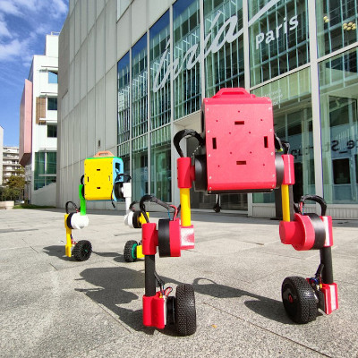
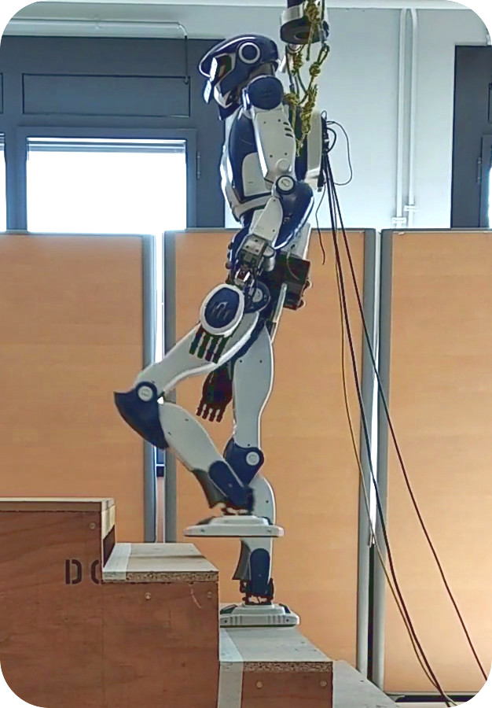

I'm a researcher in robot learning with a particular interest in perceptive locomotion. I've made HRP-4 humanoid robots climb stairs at the Airbus Saint-Nazaire factory, worked with ANYmal quadrupeds at ANYbotics AG, and now develop the open-source Upkie wheeled bipeds. You can check out ideas I've contributed to in my scientific publications and their corresponding software on GitHub. I also toot and share notes on this website.
I received my habilitation from ENS-PSL in 2024. Previously, I was locomotion team lead at ANYbotics AG and researcher in humanoid locomotion at LIRMM. As a student, I studied robotics at the University of Tokyo during my Ph.D. and computer science at ENS-PSL during my M.Sc.
News
- Talk at FOSDEM 2026: "Open-Source Robotics in Practice: Lessons from Upkie Wheeled Bipeds" in the Robotics and Simulation devroom (video)
- PhD committee of Marc Duclusaud: "Modeling Approaches and Reinforcement Learning for Robust and Autonomous Locomotion of Humanoid Robots in Dynamic Contexts"
- Lecture at ENS-PSL: "Modeling and control of legged locomotion" (slides)
- Lecture at Robotics MVA: "Reinforcement learning for legged robots" (slides)
- Invited talk at LAAS-CNRS: "Inductive biases in robot learning for contact detection and collision avoidance" (slides)
- Invited talk at the Harada Lab: "Inductive biases in robot learning for contact detection and collision avoidance" (slides)
- Co-organizing the CoRL 2025 workshop on Open-Source Hardware in the Era of Robot Learning (full recording)
Open-source robots

I recommend working with open-hardware robots to experiment faster than on commercial humanoids or quadrupeds. In my research, I prototype with Upkie wheeled bipeds whose stack is fully open source, from high-level Python down to the low-level firmware code that runs on moteus motor controllers. Upkies have only six actuated joints, yet they have the key features and core problems of legged robots like balancing and handling contacts. We have used them for instance when working on contact detection or obstacle-avoidance from vision.
Stair climbing for humanoid robots

One way to develop robot behaviors in the lab is to aim for repeatable demos, but at some point this goal steers us away from generalizing to the real world. For instance, the LIPM walking controller I worked on for the HRP-4 humanoid could repeatedly achieve a relatively complex task like stair climbing, but it wouldn't know how to react to unscripted scenarios like banging its head on a ceiling. That was due in part to all its behaviors being implemented by control systems, each coming with its own set of parameters to tune, stitched together by a finite state machine. The complexity of "keeping it all working together" increased significantly with each new behavior added to the system.
Open access
I support open access and was fortunate to be able to publish most of my research as open-access manuscripts and open-source software. PDF files linked from this website are peer-reviewed revisions of the articles I've co-authored. On top of open access, I advocate for overlay journals as a way to challenge the oligopoly of publishers, who act as rent-seeking gatekeepers in the scientific ecosystem.